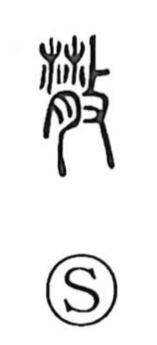

散

Uncategorized
Kun: chiru, chirasu, chirakasu, chirakaru | On: san
to scatter ・ to disperse ・ to break up
Explanation
This character combines 背, which portrays a slab of sinewy, tough meat, with 攴 (攵), the hand wielding a stick to strike. Because that back meat is hard, the scene is of pounding it until it breaks apart. From this vivid act of beating something into small pieces, the sense naturally extends to scattering and dispersal.